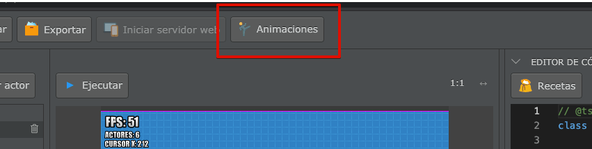
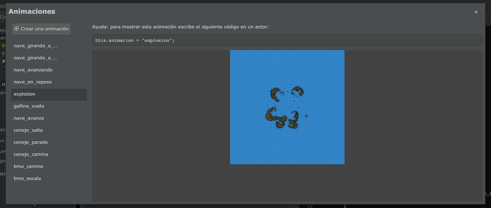
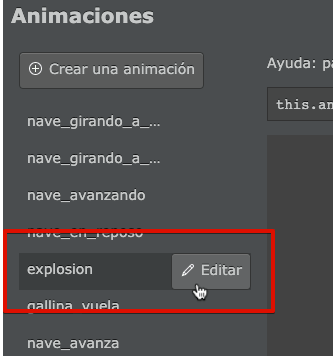
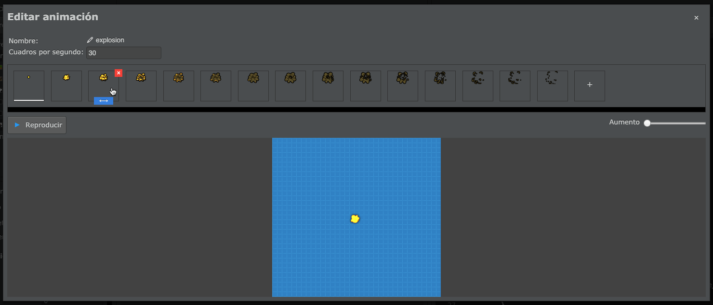
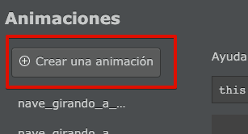
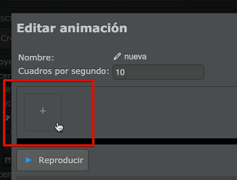
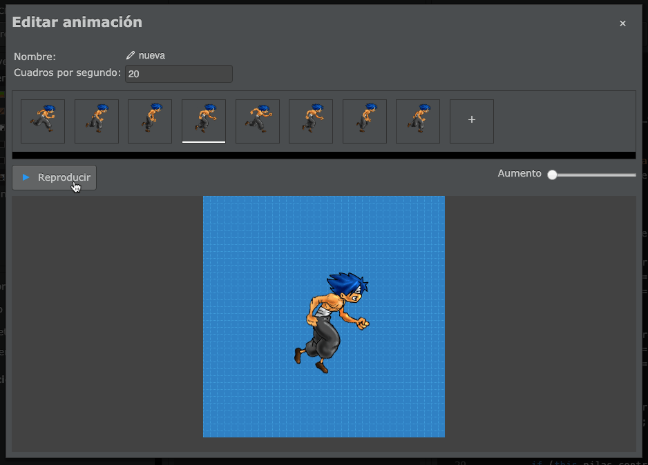
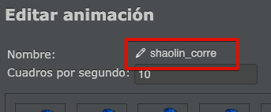
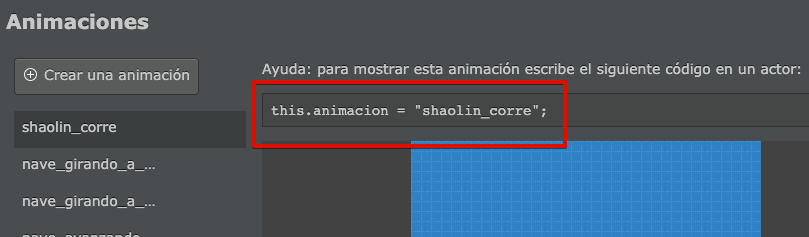
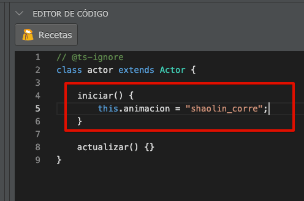

Щоб створити анімацію, ви повинні використовувати вбудований редактор анімації, який можна відкрити за допомогою кнопки у верхній частині екрану:

Ця кнопка відкриє вікно, у якому можна переглянути всі анімації проєкту:

Ці анімації можна легко редагувати. Для цього наведіть вказівник миші на назву анімації та натисніть на кнопку "Редагувати":

Анімація - це набір зображень, які відображаються одне за одним із певною швидкістю. Усі зображення анімації ви можете бачити в редакторі анімації:

Щоб створити анімацію, натисніть кнопку "Створити анімацію":

а потім завантажте кожен кадр анімації, натиснувши кнопку "+":

Наприклад, представлена анімація персонажа, що біжить, має кілька кадрів, на кожному з яких персонаж зображений у різних положеннях:

Ви можете використовувати кнопку "Відтворити" та властивість "Кадрів за секунду", щоб налаштувати швидкість анімації на власний вибір:
Нарешті, дуже важливо призначити назву анімації, наприклад "shaolin_corre" (шаолінь біжить):

Це дуже важливо, оскільки ваша гра може мати багато анімацій, і назви, які ви обираєте, будуть єдиним способом ідентифікувати кожну з них.
Тепер ви можете закрити вікно редактора анімації та перейти до наступного розділу.
Після створення анімації все, що вам потрібно зробити, це скопіювати код, який відображається у рядку над вікном перегляду анімації:

Цей код використовується, щоб вказати акторові, яку анімацію відтворити. Наприклад, якщо ви хочете, щоб актор показував цю анімацію, коли вона починається, ви повинні розмістити її всередині функції "iniciar" (ініціювати, розпочати) так:

Анімації завжди відображаються циклічно, тобто коли вони закінчуються, вони починаються спочатку. Якщо ваша анімація традиційна, як-от ходіння персонажу, продовження анімації відбувається автоматично.
Якщо ви хочете визначити точний момент завершення анімації, слід створити метод під назвою cuando_finaliza_animacion, всередині якого розмістити певний код, щоб реагувати на завершення анімації. Наприклад, анімаційний ефект "explosión" (вибух) змусить актора автоматично зникнути з екрану, коли закінчиться його анімація.